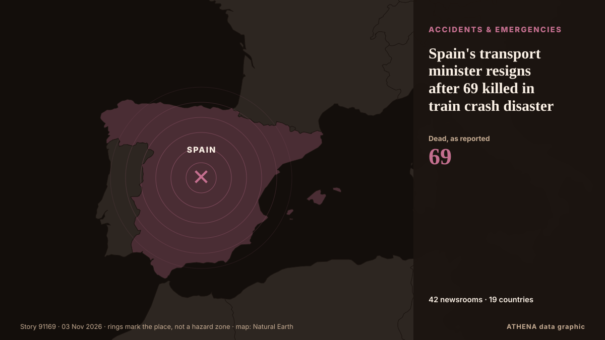

Spain's transport minister resigns after 69 killed in train crash disaster

Dr Marta Shahbazi was one of 69 people killed in the devastating crash last week. από Birmingham Mail
Αναφέρθηκε ανεξάρτητα από 42 μέσα σε 19 χώρες από τις 1 Νοε, πρώτο το Birmingham Mail· η κάλυψη κορυφώνεται. Το ATHENA εκτιμά τον κίνδυνο υψηλό (7.5/10), κυρίως λόγω της σοβαρότητάς του και του ρυθμού κάλυψης. Βεβαιότητα 88% (υψηλή): το επιβεβαιώνουν 42 ανεξάρτητα μέσα, μέση αξιοπιστία 74%. Μέσα ανά χώρα: Ηνωμένο Βασίλειο (11), Ισπανία (5), Κίνα (4). Κάλυψη: 1 Νοε έως 3 Νοε, 57 ώρες.
Γιατί έχει σημασία: Οι νομικές αλλαγές και οι αλλαγές πολιτικής μεταβάλλουν δικαιώματα, υποχρεώσεις και δημόσιες υπηρεσίες για όσους αφορούν.
Τι άλλαξε: 26 νέες αναφορές από 25 μέσα στο 24ωρο έως 3 Νοε.
Πρώτη διατύπωση: UK scientist killed in horror Spain train crash was on her way to collect prize
Οι τίτλοι των ειδήσεων παρουσιάζονται στα αγγλικά, όπως δημοσιεύτηκαν.
Με μια ματιά
Επιλέγεται, βαθμολογείται και γράφεται από τη δημοσιευμένη μεθοδολογία του ATHENA. Κανένας συντάκτης δεν παρεμβαίνει σε μεμονωμένα γεγονότα. Πώς παράγεται ›
| 01 Nov 12:16 UTC | 5 |
|---|---|
| 01 Nov 15:16 UTC | 7 |
| 01 Nov 18:16 UTC | 0 |
| 01 Nov 21:16 UTC | 0 |
| 02 Nov 00:16 UTC | 8 |
| 02 Nov 03:16 UTC | 0 |
| 02 Nov 06:16 UTC | 2 |
| 02 Nov 09:16 UTC | 5 |
| 02 Nov 12:16 UTC | 2 |
| 02 Nov 15:16 UTC | 0 |
| 02 Nov 18:16 UTC | 0 |
| 02 Nov 21:16 UTC | 2 |
| 03 Nov 00:16 UTC | 0 |
| 03 Nov 03:16 UTC | 0 |
| 03 Nov 06:16 UTC | 0 |
| 03 Nov 09:16 UTC | 1 |
| 03 Nov 12:16 UTC | 0 |
| 03 Nov 15:16 UTC | 0 |
| 03 Nov 18:16 UTC | 8 |
| 03 Nov 21:16 UTC | 17 |
| 01 Nov 12:32 UTC | 4.8 |
|---|---|
| 01 Nov 13:19 UTC | 5.8 |
| 02 Nov 00:45 UTC | 6.0 |
| 02 Nov 08:46 UTC | 6.3 |
| 02 Nov 15:06 UTC | 6.3 |
| 04 Nov 00:47 UTC | 7.5 |
| 04 Nov 00:47 UTC | 7.5 |
Γιατί αυτοί οι αριθμοί
Σημασία
Κίνδυνος
Βεβαιότητα
Η κάλυψη — ποιος το ανέφερε και πότε
ο τίτλος όπως δημοσιεύτηκε · ανοίγει το πρωτότυπο- Birmingham Mail · Ηνωμένο ΒασίλειοUK scientist killed in horror Spain train crash was on her way to collect prize
- Sky News (World) · Ηνωμένο ΒασίλειοUniversity of Cambridge scientist died in Spain train crash
- The Independent · Ηνωμένο ΒασίλειοBritish scientist among 69 killed in Spain train disaster was travelling to collect prestigious award
- The Olive Press · Ισπανία‘Inspiring’ Cambridge University scientist on her way to collect award for pioneering IVF research among 69 killed in Toledo train disaster
- The Guardian · Ηνωμένο ΒασίλειοTributes paid to ‘inspiring’ Cambridge scientist who died in Spain train crash
- Evening Standard (London) · Ηνωμένο ΒασίλειοUniversity of Cambridge scientist died in Spain train crash
- CGTN (World) · ΚίναSpain's rail crisis: 'It's like Russian Roulette'
- BBC News · Ηνωμένο ΒασίλειοUniversity of Cambridge scientist among those who died in Spanish train crash
- Bristol Post · Ηνωμένο Βασίλειο'Brilliant' Cambridge scientist killed in Spanish train crash tragedy
- Manchester Evening News · Ηνωμένο ΒασίλειοCambridge professor confirmed dead after Spain train crash
- MyJoyOnline · ΓκάναCambridge scientist dies in Spanish train crash
- Chronicle Live (Newcastle) · Ηνωμένο ΒασίλειοCambridge professor confirmed dead after Spain train crash kills 69 people
- New Straits Times · ΜαλαισίαOfficial: Four US citizens, Canadian among Spain train crash dead
- CBS News (World) · Ηνωμένες Πολιτείες4 Americans among dozens killed in train crash in Spain, officials say
- The Guardian · Ηνωμένο ΒασίλειοSpain train crash: US, Japan and Canada citizens among dead, authorities say
- Mainichi (English) · Ιαπωνία1 Japanese confirmed dead in Spain train crash: gov't official
- Free Malaysia Today · ΜαλαισίαFour US citizens, Canadian among victims of deadly Spain train crash
- The Straits Times · ΣιγκαπούρηFour US citizens, Canadian among Spain train crash dead: Official
- The Rio Times · ΒραζιλίαFour Americans Among 69 Dead in Spain Crash
- The Local Spain · ΙσπανίαToday in Spain: A roundup of the latest news on Monday
- The Local Spain · ΙσπανίαFour US citizens and one Canadian among Spain train crash dead
- The Local Spain · ΙσπανίαSpain’s train drivers call more strike days following crash
- Anadolu Agency (English) · ΤουρκίαSpain identifies 66 of 69 victims of deadly high-speed train crash
- The Canadian Press (via CityNews) · Καναδάς4 Americans and 1 Canadian among the 69 dead in Spain’s train collision
- CBC News (alternative feed) · ΚαναδάςCanadian among the dead in Spanish high-speed rail crash
- The Globe and Mail · ΚαναδάςOne Canadian among the 69 dead in Spain’s high-speed train collision
- ABC News (International) · Ηνωμένες Πολιτείες4 Americans and 1 Canadian among the 69 dead in Spain's train collision
- Global News (World) · ΚαναδάςCanadian national, 4 Americans among 69 dead in Spain train collision
- CGTN (World) · ΚίναAll 69 victims of Spain's Urda train collision identified
- China Daily — page reader · ΚίναAll 69 victims of Spain's Urda train collision identified
- The Rio Times · ΒραζιλίαSpain Election Odds Put Feijóo at 84%
- The Rio Times · ΒραζιλίαSpain’s Rail Minister Quits Over Train Crash
- The Olive Press · ΙσπανίαBREAKING: Spain’s transport minister Oscar Puente resigns over Toledo train disaster that killed 69 people
- Sky News (World) · Ηνωμένο ΒασίλειοSpain's transport minister to resign after train crash killed 69 people
- DW English · ΓερμανίαSpain transport minister offers resignation in wake of train accident
- Euractiv · ΒέλγιοSpanish transport minister offers resignation after deadly train crash
- RTÉ News · ΙρλανδίαSpain's transport minister resigns days after train crash
- China Daily — page reader · ΚίναSpanish transport minister says to step down after two serious high-speed train tragedies this year
- Anadolu Agency (English) · ΤουρκίαSpanish transport minister announces resignation after deadly train accident
- FBC News · ΦίτζιSpain’s transport minister says he will resign after latest deadly train crash